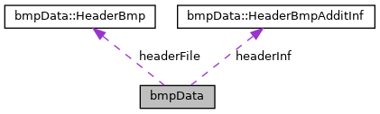

Class for handling BMP image data, including loading, saving, rotating, and applying Gaussian filter. More...
#include <bmpData.h>

Classes | |
| struct | HeaderBmp |
| Structure representing the BMP file header. More... | |
| struct | HeaderBmpAdditInf |
| Structure representing the DIB header (additional BMP information). More... | |
Public Member Functions | |
| bmpData (const std::string &nameOfFile) | |
| Constructor. Loads BMP file. More... | |
| bool | loadingFile (const std::string &nameOfFile) |
| Loads BMP file. More... | |
| bool | savingFile (const std::string &nameOfFile) const |
| Saves BMP file. More... | |
| void | rotateRT (int numThreads=4) |
| Rotates the image to the right (clockwise). More... | |
| void | rotateLF (int numThreads=4) |
| Rotates the image to the left (counterclockwise). More... | |
| void | filterOfGauss (int sizeOfCore, double indicator, int numThreads=4) |
| Applies a Gaussian filter to the image. More... | |
Private Member Functions | |
| std::vector< std::vector< double > > | matrixOfCore (int size, double indicator) |
| Generates a Gaussian kernel matrix. More... | |
| double | GaussF (int x, int y, double indicator) |
| Computes the value of the Gaussian function at (x, y). More... | |
| void | pixCore (int x, int y, const std::vector< std::vector< double >> &core, int midst, double &red, double &green, double &blue) |
| Applies the convolution kernel to a pixel. More... | |
Private Attributes | |
| HeaderBmp | headerFile |
| BMP file header. More... | |
| HeaderBmpAdditInf | headerInf |
| BMP DIB header. More... | |
| std::vector< uint8_t > | pix |
| Pixel data. More... | |
| int | width |
| Image width. More... | |
| int | height |
| Image height. More... | |
Friends | |
| void | run_performance_tests () |
| Friend function for running performance tests. More... | |
Detailed Description
Class for handling BMP image data, including loading, saving, rotating, and applying Gaussian filter.
Constructor & Destructor Documentation
◆ bmpData()
|
inline |
Constructor. Loads BMP file.
- Parameters
-
nameOfFile Name of the BMP file to load
Definition at line 100 of file bmpData.h.
References loadingFile().
Member Function Documentation
◆ filterOfGauss()
| void bmpData::filterOfGauss | ( | int | sizeOfCore, |
| double | indicator, | ||
| int | numThreads = 4 |
||
| ) |
Applies a Gaussian filter to the image.
Applies a Gaussian filter to the entire image.
- Parameters
-
sizeOfCore Size of the Gaussian kernel indicator Gaussian indicator (sigma) numThreads Number of threads to use (default: 4)
The image is processed using multiple threads for performance.
- Parameters
-
sizeOfCore Size of the Gaussian kernel (should be odd). indicator Standard deviation (sigma) of the Gaussian. numThreads Number of threads to use for processing (default 4).
Definition at line 107 of file filterOfGauss.cpp.
References height, matrixOfCore(), pix, pixCore(), and width.
Referenced by main().
◆ GaussF()
|
private |
Computes the value of the Gaussian function at (x, y).
Calculates the value of the Gaussian function at coordinates (x, y).
- Parameters
-
x X coordinate y Y coordinate indicator Gaussian indicator (sigma)
- Returns
- Value of the Gaussian function
The formula used is:
![\[ \frac{1}{2 \pi \sigma^2} \exp\left(-\frac{x^2 + y^2}{2 \sigma^2}\right) \]](form_0.png)
where  is the indicator parameter.
is the indicator parameter.
- Parameters
-
x X coordinate relative to kernel center. y Y coordinate relative to kernel center. indicator Standard deviation (sigma) of the Gaussian.
- Returns
- Gaussian function value at (x, y).
Definition at line 21 of file filterOfGauss.cpp.
Referenced by matrixOfCore().
◆ loadingFile()
| bool bmpData::loadingFile | ( | const std::string & | nameOfFile | ) |
Loads BMP file.
Loads a BMP file from the specified filename.
- Parameters
-
nameOfFile Name of the BMP file to load
- Returns
- true if successful, false otherwise
- Parameters
-
nameOfFile The path to the BMP file to load.
- Returns
- true if the file was loaded successfully, false otherwise.
Open the file in binary and input mode.
Check if the file was opened successfully.
If not, print an error message and return false.
Read the BMP file header.
Check if the file is a valid BMP file by checking the header type.
If not a BMP file, print an error message and return false.
Read the BMP header information.
Extract the width and height from the header information.
Resize the pixel vector to the size specified in the header.
Move the file pointer to the beginning of the pixel data.
Read the pixel data into the pixel vector.
Close the file.
Return true to indicate successful loading.
Definition at line 13 of file bmpFunctions.cpp.
References headerFile, headerInf, bmpData::HeaderBmpAdditInf::height, height, bmpData::HeaderBmpAdditInf::imageSizeBytes, bmpData::HeaderBmp::offset, pix, bmpData::HeaderBmp::type, bmpData::HeaderBmpAdditInf::width, and width.
Referenced by bmpData().
◆ matrixOfCore()
|
private |
Generates a Gaussian kernel matrix.
Generates a Gaussian kernel matrix of given size and indicator.
- Parameters
-
size Kernel size indicator Gaussian indicator (sigma)
- Returns
- 2D vector representing the kernel
The kernel is normalized so that the sum of all elements equals 1.
- Parameters
-
size Size of the kernel (must be odd). indicator Standard deviation (sigma) of the Gaussian.
- Returns
- 2D vector representing the Gaussian kernel matrix.
Definition at line 35 of file filterOfGauss.cpp.
References GaussF().
Referenced by filterOfGauss().
◆ pixCore()
|
private |
Applies the convolution kernel to a pixel.
Applies the Gaussian kernel to a pixel at position (x, y).
- Parameters
-
x X coordinate y Y coordinate core Convolution kernel midst Kernel center red Output red value green Output green value blue Output blue value
This function performs convolution by multiplying neighboring pixels by kernel weights. Pixel coordinates are clamped to image boundaries.
- Parameters
-
x X coordinate of the target pixel. y Y coordinate of the target pixel. core Gaussian kernel matrix. midst Half of the kernel size (kernel center offset). red Reference to accumulate the red channel value. green Reference to accumulate the green channel value. blue Reference to accumulate the blue channel value.
Definition at line 74 of file filterOfGauss.cpp.
References height, pix, and width.
Referenced by filterOfGauss().
◆ rotateLF()
| void bmpData::rotateLF | ( | int | numThreads = 4 | ) |
Rotates the image to the left (counterclockwise).
Rotates the image 90 degrees to the left (counter-clockwise).
- Parameters
-
numThreads Number of threads to use (default: 4) numThreads Number of threads to use for rotation (default is 4).
Calculate the padding for the original and rotated image.
Create a new pixel vector for the rotated image.
Calculate the index for the source and destination pixels.
Copy the pixel data from the source to the destination vector.
Move the rotated pixel data to the original pixel vector.
Swap the width and height values to reflect the rotation.
Definition at line 182 of file bmpFunctions.cpp.
References height, pix, and width.
Referenced by main().
◆ rotateRT()
| void bmpData::rotateRT | ( | int | numThreads = 4 | ) |
Rotates the image to the right (clockwise).
Rotates the image 90 degrees to the right (clockwise).
- Parameters
-
numThreads Number of threads to use (default: 4) numThreads Number of threads to use for rotation (default is 4).
Calculate the padding for the original and rotated image.
Create a new pixel vector for the rotated image.
Lambda for processing part of the image.
Iterate over each pixel in the original image.
Calculate the index for the source and destination pixels.
Copy the pixel data from the source to the destination vector.
Move the rotated pixel data to the original pixel vector.
Swap the width and height values to reflect the rotation.
Definition at line 125 of file bmpFunctions.cpp.
References height, pix, and width.
Referenced by main().
◆ savingFile()
| bool bmpData::savingFile | ( | const std::string & | nameOfFile | ) | const |
Saves BMP file.
Saves the current image data to a BMP file with the specified filename.
- Parameters
-
nameOfFile Name of the BMP file to save
- Returns
- true if successful, false otherwise
- Parameters
-
nameOfFile The path to the BMP file to save.
- Returns
- true if the file was saved successfully, false otherwise.
Open the file in binary and output mode.
Check if the file was opened successfully.
If not, print an error message and return false.
Create a new BMP file header with current image data.
< Magic number for BMP file
< File size (header size + pixel data size)
< Reserved
< Reserved
< Offset to pixel data
Create a new BMP info header with current image data.
< Size of header info
< Image width
< Image height
< Color planes
< Bits per pixel
< Compression
< Image size
< Horizontal resolution
< Vertical resolution
< Number of colors in the palette
< Number of important colors used
Write the BMP file header to the file.
Write the BMP info header to the file.
Write the pixel data to the file.
Close the file.
Return true to indicate successful saving.
Definition at line 65 of file bmpFunctions.cpp.
References headerFile, headerInf, height, pix, and width.
Referenced by main().
Friends And Related Function Documentation
◆ run_performance_tests
|
friend |
Friend function for running performance tests.
Measures execution time for single-threaded and multi-threaded versions of rotateRT, rotateLF, and filterOfGauss methods. Outputs average timings and speedup factors over multiple runs.
This function executes a series of performance tests to evaluate the efficiency of implemented image processing operations.
Definition at line 18 of file performance_tests.cpp.
Member Data Documentation
◆ headerFile
|
private |
BMP file header.
Definition at line 59 of file bmpData.h.
Referenced by loadingFile(), and savingFile().
◆ headerInf
|
private |
BMP DIB header.
Definition at line 60 of file bmpData.h.
Referenced by loadingFile(), and savingFile().
◆ height
|
private |
Image height.
Definition at line 72 of file bmpData.h.
Referenced by filterOfGauss(), loadingFile(), pixCore(), rotateLF(), rotateRT(), and savingFile().
◆ pix
|
private |
Pixel data.
Definition at line 62 of file bmpData.h.
Referenced by filterOfGauss(), loadingFile(), pixCore(), rotateLF(), rotateRT(), and savingFile().
◆ width
|
private |
Image width.
Definition at line 71 of file bmpData.h.
Referenced by filterOfGauss(), loadingFile(), pixCore(), rotateLF(), rotateRT(), and savingFile().
The documentation for this class was generated from the following files:
- include/bmpData.h
- src/bmpFunctions.cpp
- src/filterOfGauss.cpp